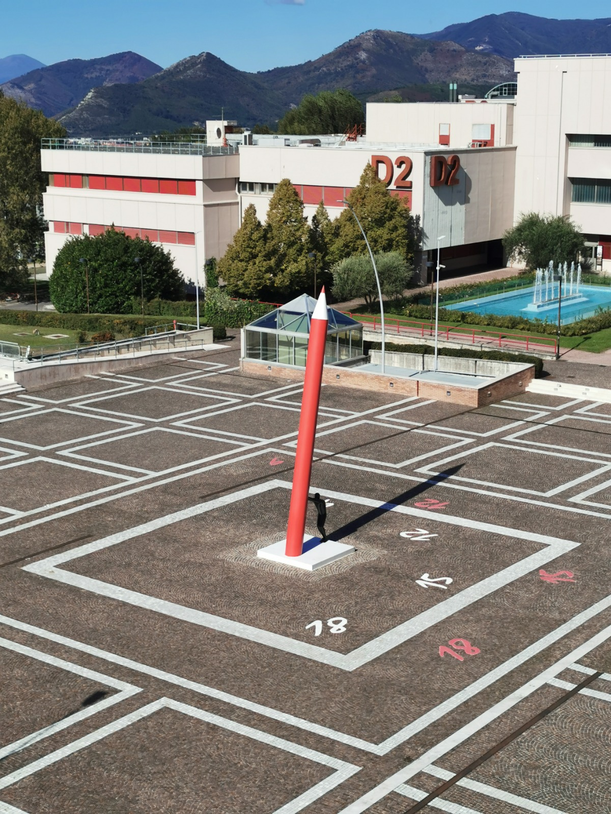
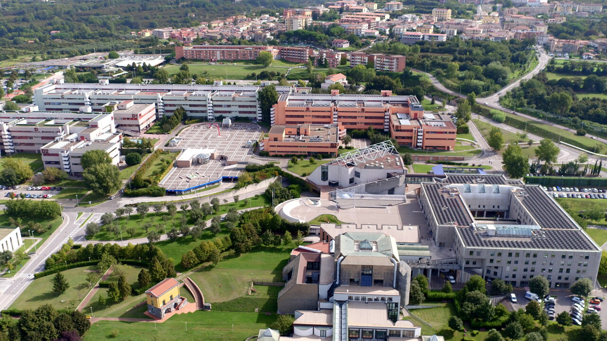
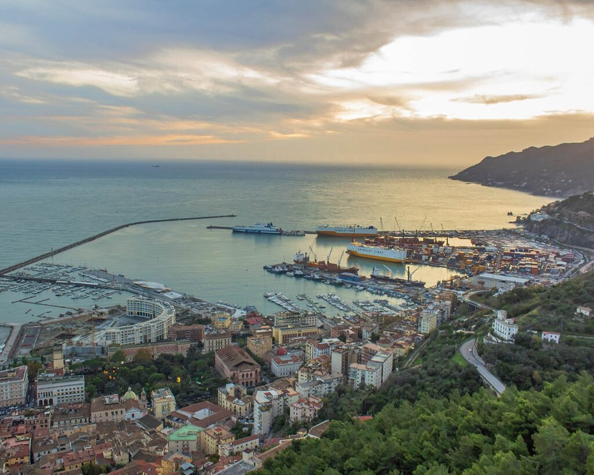
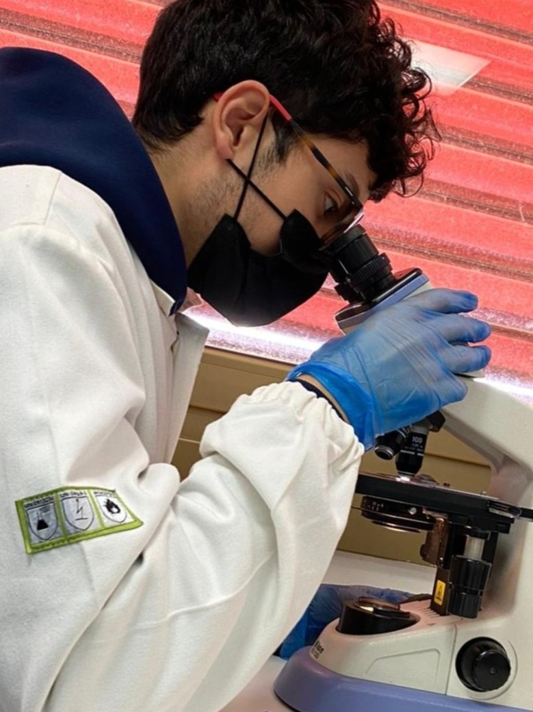

Bachelor's degree in Biological Sciences (L-13)
Supervisor: Prof. Pierpaolo Cavallo
I completed my Bachelor of Biological Sciences at the University of Salerno, graduating with top marks (110/110) in February 2023. The programme provided me with a solid, interdisciplinary foundation in the biological sciences, covering key areas such as molecular biology, genetics, microbiology, physiology, ecology, and biochemistry, alongside supporting disciplines like chemistry and physics.
During my academic path I completed a Microbiology Internship within the UNISA's microbiology laboratory.
My thesis explored the growing threat of antimicrobial resistance and the potential of marine-derived compounds as alternative therapeutic strategies against Staphylococcus aureus. This research sparked my interest in marine biotechnology and strengthened my laboratory skills.
Overall, the Bachelor programme equipped me with the theoretical knowledge and practical skills essential for scientific research, laying the groundwork for my subsequent specialisation in marine biology.
Full academic record of the Bachelor's programme



